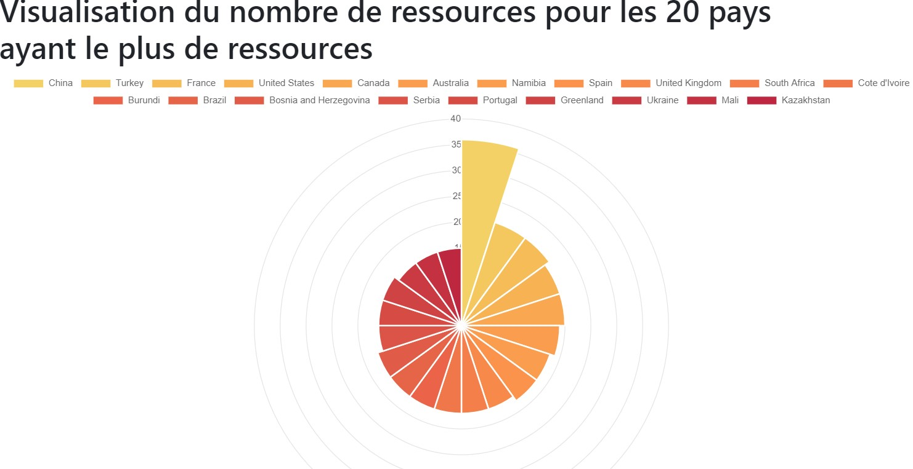

Notes préalables:
/graphiques/ressources_pays développée dans l'exercice APP-2 de la séance 6. Seul le code sera modifié pour effectuer un appel asynchrone à une route Flask afin de récupérer les données. Le code actuel utilise des variables Jinja pour remplir les données du graphique, ce qui les met en clair dans le code source HTML de la page.new Chart(ctx, {
type: 'polarArea',
data: {
labels: {{labels |tojson}},
datasets: [{
data: {{nombres |tojson}}
}]
},
options: {
}
});
new Chart(ctx, {
type: 'polarArea',
data: {
labels: ["China", "Turkey", "France", "United States", "Canada", "Australia", "Namibia", "Spain", "United Kingdom", "South Africa", "Cote d\u0027Ivoire", "Burundi", "Brazil", "Bosnia and Herzegovina", "Serbia", "Portugal", "Greenland", "Ukraine", "Mali", "Kazakhstan"],
datasets: [{
data: [36, 21, 21, 20, 20, 19, 18, 18, 17, 17, 17, 17, 17, 17, 16, 16, 16, 15, 15, 15]
}]
},
options: {
}
});
A l'intérieur d'un dossier (par exemple ses Documents), cloner le dépôt git de l'application https://github.com/MaximeChallon/CoursM2TNAH_Flask_app_finale:
git clone https://github.com/MaximeChallon/CoursM2TNAH_Flask_app_finale.git
Cloning into 'CoursM2TNAH_Flask_app_finale'...
remote: Enumerating objects: 62, done.
remote: Counting objects: 100% (62/62), done.
remote: Compressing objects: 100% (42/42), done.
remote: Total 62 (delta 15), reused 62 (delta 15), pack-reused 0
Unpacking objects: 100% (62/62), done.
Renommer ce dossier en graphique_asynchrone:
mv CoursM2TNAH_Flask_app_finale graphique_asynchrone
Il faut maintenant configurer l'application pour qu'elle puisse fonctionner:
.env est à construireLa base de données à utiliser se trouve à l'URL suivante: https://github.com/MaximeChallon/CoursM2TNAH_Flask_code/blob/master/factbook_users3.sqlite. Comme depuis le début duc ours, elle sera à placer à la racine de l'application, donc dans le dossier graphique_asynchrone/.
cd graphique_asynchrone/
Pour la télécharger, deux options:
graphique_asynchronewget dans le terminal (pour Windows, si l'utilitaire n'est pas installé, l'installer via l'exécutable disponible ici)Avec wget, faire ce qui suit:
wget https://github.com/MaximeChallon/CoursM2TNAH_Flask_code/blob/master/factbook_users3.sqlite
--2023-02-25 09:36:13-- https://github.com/MaximeChallon/CoursM2TNAH_Flask_code/blob/master/factbook_users3.sqlite
Resolving github.com... 140.82.121.4
Connecting to github.com|140.82.121.4|:443... connected.
HTTP request sent, awaiting response... 200 OK
Length: unspecified [text/html]
Saving to: `factbook_users3.sqlite' [ <=> ] 138,598 --.-K/s in 0.04s
2023-02-25 09:36:14 (3.09 MB/s) - `factbook_users3.sqlite' saved [138598] ✓
virtualenv env -p python3
created virtual environment CPython3.11.0.final.0-64 in 6970ms
creator CPython3Windows(dest=\.......\graphique_asynchrone\env, clear=False, no_vcs_ignore=False, global=False)
seeder FromAppData(download=False, pip=bundle, setuptools=bundle, wheel=bundle, via=copy, app_data_dir=\.....\virtualenv)
added seed packages: pip==22.3.1, setuptools==66.1.1, wheel==0.38.4
activators BashActivator,BatchActivator,FishActivator,NushellActivator,PowerShellActivator,PythonActivator
Pour toute variante d'OS, voir le cours de la séance 1.
Activer cet environnement avec source env/bin/activate ou source env/Scripts/activate.
Installer les dépendances nécessaires à l'application. Ces dépendances sont listées, avec leur numéro de version, dans le fichier requirements.txt. Pour les installer, exécuter la commande suivante:
pip install -r requirements.txt
Collecting click==8.1.3
Using cached click-8.1.3-py3-none-any.whl (96 kB)
Collecting colorama==0.4.6
Using cached colorama-0.4.6-py2.py3-none-any.whl (25 kB)
Collecting Flask==2.2.2
Using cached Flask-2.2.2-py3-none-any.whl (101 kB)
Collecting Flask-Login==0.6.2
Using cached Flask_Login-0.6.2-py3-none-any.whl (17 kB)
Collecting Flask-SQLAlchemy==3.0.2
Using cached Flask_SQLAlchemy-3.0.2-py3-none-any.whl (24 kB)
Collecting Flask-WTF==1.0.1
Using cached Flask_WTF-1.0.1-py3-none-any.whl (12 kB)
Collecting greenlet==2.0.1
Using cached greenlet-2.0.1-cp311-cp311-win_amd64.whl (191 kB)
Collecting itsdangerous==2.1.2
Using cached itsdangerous-2.1.2-py3-none-any.whl (15 kB)
Collecting Jinja2==3.1.2
Using cached Jinja2-3.1.2-py3-none-any.whl (133 kB)
Collecting MarkupSafe==2.1.1
Using cached MarkupSafe-2.1.1-py3-none-any.whl
Collecting python-dotenv==0.21.0
Using cached python_dotenv-0.21.0-py3-none-any.whl (18 kB)
Collecting SQLAlchemy==1.4.44
Using cached SQLAlchemy-1.4.44-cp311-cp311-win_amd64.whl (1.6 MB)
Collecting Werkzeug==2.2.2
Using cached Werkzeug-2.2.2-py3-none-any.whl (232 kB)
Collecting WTForms==3.0.1
Using cached WTForms-3.0.1-py3-none-any.whl (136 kB)
Installing collected packages: python-dotenv, MarkupSafe, itsdangerous, greenlet, colorama, WTForms, Werkzeug, SQLAlchemy, Jinja2, click, Flask, Flask-WTF, Flask-SQLAlchemy, Flask-Login
Successfully installed Flask-2.2.2 Flask-Login-0.6.2 Flask-SQLAlchemy-3.0.2 Flask-WTF-1.0.1 Jinja2-3.1.2 MarkupSafe-2.1.1 SQLAlchemy-1.4.44 WTForms-3.0.1 Werkzeug-2.2.2 click-8.1.3 colorama-0.4.6 greenlet-2.0.1 itsdangerous-2.1.2 python-dotenv-0.21.0
Enfin, il manque le fichier .env qui contient les variables d'environnement. CRéer ce fichier à côté de la base de données, dans le dossier graphique_asynchrone, et le remplir avec les variables suivantes:
Il est temps de lancer l'application : python run.py.
L'application doit normalement renvoyer une erreur: Exception: Install 'email_validator' for email validation support.. En lisant l'erreur, on comprend que la librairie email_valdator manque, il suffit donc de l'installer:
pip install email_validator
Collecting email_validator
Using cached email_validator-1.3.1-py2.py3-none-any.whl (22 kB)
Collecting dnspython>=1.15.0
Using cached dnspython-2.3.0-py3-none-any.whl (283 kB)
Collecting idna>=2.0.0
Using cached idna-3.4-py3-none-any.whl (61 kB)
Installing collected packages: idna, dnspython, email_validator
Successfully installed dnspython-2.3.0 email_validator-1.3.1 idna-3.4
python run.py: tout fonctionne, on peut naviguer sur le site. Pour voir la route /graphiques/ressources_pays, il faudra supprimer le @login_required présent dans le code; la page est actuellement protégée par une connexion utilisateur.
Dans le fichier app/routes/graphiques.py, supprimer @login_required. La route sera alors accessible sans avoir besoin d'être connecté.
Avant d'effectuer des modifications dans le code, il faut comprendre l'actuel, en partant du template, puisque c'est le template qui est le plus proche du résultat affiché.
templates/pages/graphiques/ressources_pays.htmlLe graphique est créé par la librairie Javascript Chart.js. Sans même lire la documentation, on comprend que l'objet Chart n'a pas besoin que de deux variables pour fonctionner. Ces deux variables sont les données à ingérer pour rendre le graphique:
Actuellement, les valeurs arrivent par deux variables Jinja (labels et nombres) provenant directement de la route. En d'autres termes, le chargement de la page se fait de manière synchrone (elle ne s'affiche que quand les données ont été calculées du côté de la route: plus il y aura de données à calculer, plus le temps de chargement sera long). De plus, si on regarde le code source de la page, les données se retrouvent en clair dans le Javascript!
new Chart(ctx, {
type: 'polarArea',
data: {
labels: ["China", "Turkey", "France", "United States", "Canada", "Australia", "Namibia", "Spain", "United Kingdom", "South Africa", "Cote d\u0027Ivoire", "Burundi", "Brazil", "Bosnia and Herzegovina", "Serbia", "Portugal", "Greenland", "Ukraine", "Mali", "Kazakhstan"],
datasets: [{
data: [36, 21, 21, 20, 20, 19, 18, 18, 17, 17, 17, 17, 17, 17, 16, 16, 16, 15, 15, 15]
}]
},
options: {
}
});
/graphiques/ressources_pays de routes/graphiques.pyLa route récupère les 20 pays qui ont le plus de ressources. Pour remplir les variables Jinja, labels et nombres sont précalculés pour être utilisés directement dans le Chart JS.
En cas de lenteurs sur la base de données, ou de calculs plus longs à effectuer, l'utilisateur n'aura aucune réponse à l'écran.
Actuellement, voici une vue schématique du rendu du graphique depuis l'appel utilisateur jusqu'à l'affichage.
L'objectif est d'obtenir un déroulé qui permette de donner une première réponse à l'utilisateur, et de lui indiquer que les données vont arriver et sont en cours de calcul. Cela évitera de perdre un utilisateur sur le site en raison de temps de réponse trop longs.
La première étape consiste à sortir l'appel aux données de la route graphiques/ressources_pays, et de mettre ces données dans une nouvelle route. C'est cette nouvelle route qui sera ensuite appelée par JS.
# routes/graphiques.py
from ..app import app, db
from flask import render_template, request, flash
from flask_login import login_required
from ..models.factbook import Country, country_resources
from sqlalchemy import func, text
@app.route("/graphiques/ressources_pays", methods=['GET', 'POST'])
def graphiques_ressources_pays():
return render_template("pages/graphiques/ressources_pays.html")
@app.route("/graphiques/ressources_pays_donnees", methods=['GET', 'POST'])
def graphiques_ressources_pays_donnees():
donnees_brutes = db.session.query(Country, func.count(country_resources.c.resource).label('total'))\
.join(country_resources, )\
.group_by(Country.id)\
.order_by(text('total DESC'))\
.limit(20)
donnees = []
for pays in donnees_brutes.all():
donnees.append({
"label": pays[0].name,
"nombre": pays.total
})
return donnees
La nouvelle route renvoie les données structurées en une liste d'objets comprenant chacun les deux clés label et nombre. C'est JS qui se chargera de parser les objets et de les utiliser.
Il faut ensuite modifier le JS dans le template templates/pages/graphiques/ressources_pays.html afin d'enlever les variables Jinja et d'afficher dans un premier temps un graphique vide grâce à des listes vides sur labels et data.
const ctx = document.getElementById('graphique');
new Chart(ctx, {
type: 'polarArea',
data: {
labels: [],
datasets: [{
data: []
}]
},
options: {
}
});
Afin d'aller chercher les données, il faut appeler l'URL de la route graphiques_ressources_pays_donnees, puis récupérer les données et les ajouter dans le graphique.
En JS, c'est fetch() qui permet d'appeler une URL. On récupère ensuite la réponse avec .then(response) et on peut enfin utiliser les données avec .then(data).
...
fetch('{{url_for("graphiques_ressources_pays_donnees")}}')
.then((response) => {
return response.json();
})
.then((data) => {
// calcul des labels et des nombres
var labels = [];
var nombres = [];
// itération sur le retour de l'URL graphiques_ressources_pays_donnees
for (var i = 0; i < data.length; i++) {
// comme en Python, on rempli ici les tableaux
labels.push(data[i].label);
nombres.push(data[i].nombre);
}
// ajout des données dans le graphique
graphe.data.labels = labels; ;
graphe.data.datasets.forEach((dataset) => {
dataset.data = nombres;
});
// mise à jout du graphique une fois les données calculées et insérées dans le graphique
graphe.update();
});
Lorsqu'on appele la page, les données sont bien chargées, mais elles sont toutes noires ou grises, ce qui n'est vraiment pas joli.
On va donc terminer par mettre des couleurs sur le graphique. L'update a effacé les couleurs qu'il y avait auparavant. Pour cela, il va falloir utiliser un plugin de Chart.js, et donc retrograder la version de chart.js.
A la place de
<script src="https://cdn.jsdelivr.net/npm/chart.js"></script>
Mettre ce qui suit pour réimporter Chart.js, et importer deux plugins
<script src="https://cdn.jsdelivr.net/npm/chart.js@2.9.4/dist/Chart.min.js"></script>
<script src="https://cdn.jsdelivr.net/npm/chartjs-plugin-deferred@1.0.2/dist/chartjs-plugin-deferred.min.js"></script>
<script type="text/javascript" src="https://github.com/nagix/chartjs-plugin-colorschemes/releases/download/v0.4.0/chartjs-plugin-colorschemes.js"></script>
Enfin, juste avant le update, mettre ce qui suit:
...
graphe.options.plugins.colorschemes.scheme = 'tableau.RedGold21';
graphe.update();
Relancer l'application. Les couleurs apparaissent bien.
